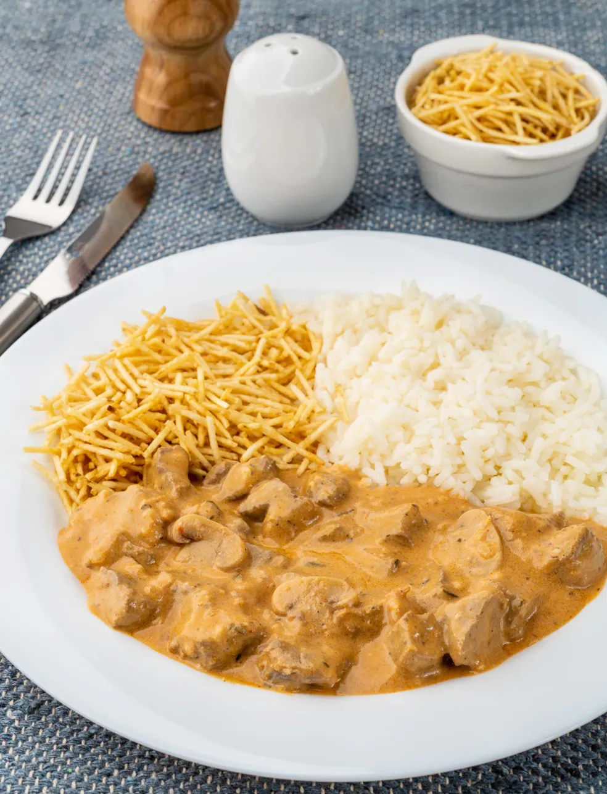

Strogonoff
Home
Bolo de Cenoura
Bolo de Chocolate
Strogonoff
Ingredientes
- 400g de carne
- 1/2 cebola ralada
- 3 colheres (sopa) de catchup
- 1 colher (sopa) de mostarda
- Sal
- 1 caixa e meia de creme de leite
- Óleo para fritar
Modo de Preparo
- Corte a carne selecionada em tirinhas, tempere com sal (eu coloco 1 ou 2 pitadas de cada, no máximo).
- Coloque óleo suficiente para fritar poucas quantidades de tirinhas (7 ou 8), esquente bem o óleo.
- Frite por 3 minutos e jogue na panela o creme de leite, catchup, extrato de tomate e mostarda.
- Sirva com arroz branco e batata palha.
Strogonoff
